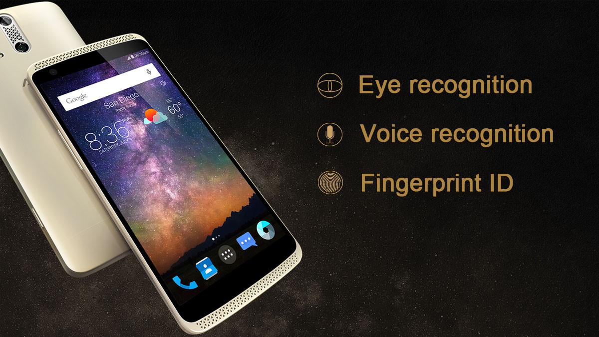

Основателем бренда Xiaomi является Лей Цзюнь. Этот талантливый инженер и не менее профессиональный бизнесмен прошел непростой путь успеха еще до того, как запустил компанию, с которой его имя сейчас ассоциируется сильнее всего:
8 лет (с 1992 по 2000 год) – поднялся по карьерной лестнице от обычного инженера до генерального директора в компании Kingston;
запустил популярную китайскую социальную сеть-аналог YouTube – yy.com;
создал успешный интернет-магазин Vancl.
Благодаря отличным идеям и профессиональному их воплощению, еще до того, как бренд Xiaomi был запущен, его основатель уже входил в число долларовых миллиардеров.
Основание компании Xiaomi
Бренд Xiaomi (Сяоми Кецзи) был запущен в 2010-м году. IT-специалист Лей Цзюнь собрал некоторых из своих самых близких партнеров и основал принципиально новый бизнес. На первых этапах истории Xiaomi компания специализировалась на:
Разработке модифицированной версии операционной системы Android под названием MIUI.
Доработке MIUI до такого состояния, которое бы позволяло создать такую версию Android, по удобству и своей инфраструктуре не уступающей ОС iOS от Apple.
Позднее произошел переход к производству смартфонов.
Ну, а на последнем этапе уже был масштабный переход в сферу разработок, производства и продаж различной иной высокотехнологичной продукции, которую сейчас легко встретить в любом отечественном магазине техники.
История Xiaomi – это пример того, как с относительно небольшого стартапа с идеями и программными продуктами можно создать нечто гораздо более мощное, претендующее на мировое лидерство.
История развития компании Xiaomi
Если рассматривать историю Xiaomi с привязкой к календарным датам и этапам развития, то можно выделить следующие основные этапы:
2010 – год, когда компания Сяоми официально зарегистрирована и начала свое существование;
16 августа 2010 года – выход фирменной прошивки MIUI;
осень 2011 года – выпуск первого смартфона от компании Сяоми под названием Xiaomi Mi 1 (отличные отзывы в Китае и великолепный старт);
2012 год – выпуск технологического наследника первого смартфона от компании (Xiaomi Mi 2, который был продан в количестве 11 млн штук – огромные объемы для того времени);
2013 год – появление модели смартфона Mi3 от компании Сяоми, а также релизное заявление об экспансии компании на рынок телевизоров и других технологичных устройств (в этот же период была озвучена стратегия, которая в итоге привела к мировому успеху – конкуренция на основе минимальных наценок, экономии на магазинах, заработка на вспомогательных услугах);
2014 год – запуск успешного суббренда смартфонов Redmi, который еще больше увеличил количество косвенных фанатов фирмы Сяоми;
с 2014-го и по наше время бренд Сяоми – это производитель смартфонов, планшетов, телевизоров, ноутбуков, наушников, портативных аккумуляторов, фитнес-браслетов, роутеров, камер, акустики, велосипедов и десятков других типов техники.
Бренд Xiaomi
Xiaomi Mi 1 – первый смартфон компании
Руководство компании не единожды заявляло о своих сверхамбициозных планах на то, чтобы стать производителем технологичной продукции №1 на планете. И это более, чем вероятно. Ведь сейчас уже трудно встретить человека, который бы задавался вопросом о том, что такое фирма Сяоми. Сейчас это – бренд, который не только успешно конкурирует с Apple на рынке смартфонов, но и зарабатывает огромные деньги в других сферах.
Создание интерфейса для Андроида – MIUI
Первое детище фирмы Сяоми – это прошивка для смартфонов под управлением ОС Android под названием MIUI (Ми-Ю-Ай). Основными ее характеристиками изначально были:
Объединение лучших характеристик, свойственных Android и IOS.
Игнорирование всех не самых хороших решений, реализованных программистами этих операционных систем.
Реализация внешнего оформления без классического стандартного меню, с активными иконками на начальном экране (как у Apple).
Начальный код, взятый у Android, как образца гибкой, открытой и удобной системы.Инновационная прошивка, которую предложил бренд Сяоми, быстро получила позитивный отклик от пользователей. Они отзывались о ней, как о понятной, доброжелательной и удобной вариации Андроида.
Первые версии MIUI от бренда Сяоми устанавливались энтузиастами на сторонние девайсы (своих у компании тогда еще не было). Одним из них был даже такой известный продукт, как Google Nexus One. После того как смартфон перестал получать обновления на предустановленную прошивку, люди начали переходить на сторонние интерфейсы – одним из популярных тогда и был MIUI.
Позднее, с началом выпуска модели Xiaomi Mi 1, многие пользователи выбирали именно этот девайс не только благодаря низкой цене и функциям, которые ранее были только у флагманов. Многие просто уже привыкли и по-настоящему влюбились в удобную и практичную MIUI от бренда Сяоми.
Выпуск смартфонов
Китайская компания Xiaomi на заре своего становления смогла выпустить устройство, которое стало настоящей легендой своего времени. Первая модель Xiaomi Mi 1 радовала покупателей такими фишками:
огромный объем аккумуляторной батареи – 1 930 миллиампер против 1 400 - 1 500 у конкурентов;
возможность установки дополнительных прошивок;
всеми удобствами современной и гибкой MIUI.
Через год китайская компания Xiaomi взорвала рынок еще сильнее. Обновленная модель смартфона "Mi 2" продавалась молниеносно. Армия фанатов, которая накопилась за предыдущие 12 месяцев, раскупила первую партию в 50 тысяч устройств всего за 3 минуты. Именно после этого успеха проект начал свое стремительное развитие, которое не останавливается до сегодняшнего времени.
Расширяя ассортимент продукции
2013 год ознаменовался для китайской компании Xiaomi началом пути покорения новых технологических рынков. Было все примерно так:
сначала Лей Цзюнь огласил планы по производству и продажам новых 3D-телевизоров со встроенной ОС Android;
потом произошел анонс нового телефона Xiaomi Mi 3;
начато производство других типов техники и глобальная конкуренция с теми, кто давно захватил рынки;
в 2014-м вышел уже смартфон Mi 4, а вместе с ним в историю компании Xiaomi вплелось производство планшетов, второго поколения телевизоров и первый умный браслет Mi Band, который сейчас до сих пор популярен и выходит в шестой версии;
выход на третье в мире место по производству смартфонов произошел через 4 года после начала жизни компании, но не заставил ее направить большую часть мощностей только на это направление производства;
в 2015-м история бренда Xiaomi пополнилась пунктом о запуске собственного вариант action-камеры, которая не стала настоящим конкурентом GoPro, но дала альтернативу для тех, кто заинтересован в гораздо более доступном ценнике;
в 2016-м году компания удивила многих стартом продаж умного велосипеда, цена которого уже "кусалась", но стала приятным открытием для десятков тысяч профессиональных велогонщиков;
в этом же году были другие, менее громкие, старты производства и продажи: умных тестеров воды, блютуз-колонок, сигвеев и даже геймпадов;
позднее состоялся релиз прямого конкурента ноутбуков Apple – устройств Xiaomi Mi Notebook (в этот раз история компании Сяоми пополнилась открытым копированием дизайнерских решений конкурента, позволившим с излишком распродавать свои ноутбуки).
Ассортимент продукции Xiaomi
Mi Band – умный браслет от Xiaomi
Таким образом, историю создания Xiaomi смело можно назвать классической историей о том, как китайцы делают что-то альтернативное и иногда даже более интересное по многим характеристикам. Но, при этом, значительно дешевле, доступнее и интереснее для широкого круга покупателей.
Выход на новые рынки
Завоевание рынков других регионов и государств – не самая стабильный раздел в истории создания Xiaomi и ее дальнейшего развития:
выход на рынок стран СНГ состоялся в 2016-м, но изначально был не очень успешен, т.к. наценки местных ритейлеров нивелировали основную фишку продуктов компании – дешевизну по сравнению с конкурентами того же уровня;
отличным было попадание на рынок соседней для Китая Индии, где продажи были успешно реализованы через два самых больших местных интернет-магазина;
в Европейском Союзе пришлось столкнуться даже с судебными разбирательствами и запретами (было запрещено продавать планшет Mi Pad из-за внешнего сходства с конкурентным продуктом от Apple);
американский рынок также оказался не в топе по количеству фанатов техники Xiaomi, но бренд изначально позиционировал свою стратегию, как ту, которая не опирается на США в качестве приоритетной страны.
Таким образом, основным рынком сбыта фирмы Xiaomi был и остается Китай. Большие продажи всех типов продукции сосредоточены в азиатском и азиатско-тихоокеанском регионе.
В других – все слишком вариативно и зависит от конкретных типов техники. Где-то популярны телефоны, где-то – телевизоры. А в других странах могут пользоваться спросом фитнес-браслеты или планшеты.
Xiaomi в России
Первые модели смартфонов от фирмы Xiaomi появились в РФ в 2016-м году. Продавались они в "Связном" и "Евросети". Но темпы продвижения через посредников этого типа не удовлетворили компанию, поэтому в скором времени было подписано новое соглашение:
официальным дистрибьютором в России стала компания "Смарт оранж";
были запущены первые брендовые офлайн-магазины в РФ.
Xiaomi в России
Фирменный магазин Xiaomi в Москве
Популяризации компании и ее продуктов в нашей стране помешали огромные наценки. Одно и то же устройство по пересчету на рубли в Китае стоило около 20 тысяч, а в России – 30-35 тысяч рублей. Этот факт перерос в настоящий "бунт и войну" с дистрибьютором:
люди составляли петиции;
покупатели переходили на заказы техники Xiaomi через "АлиЭкспресс";
"Смарт Оранж" связывался с таможенниками и просил запрещать перевозку через границу посылок с техникой Xiaomi;
позднее штучный ввоз все-таки разрешили (скорее всего, на ситуацию повлияла фирма Xiaomi).
Все это серьезно помешало популяризации в РФ, заметно замедлив ее. Тем не менее устройства компании по-прежнему считаются образцом "лучшего за свою цену". Несмотря на то, что цены на ту же технику в Китае будут гораздо ниже, гарантийное обслуживание в нашей стране делает покупку в официальных магазинах-ритейлерах более предпочтительной.
Похожие статьи:
Компания KFC: история развития известного бренда
Компания Nvidia: история развития известного бренда
Компания Tesla: история развития бренда электрокаров
Компания Siemens: история развития известного бренда
Бренды компании Xiaomi
Если говорить о компании Xiaomi, то многие изначально воспринимают ее исключительно как производителя телефонов. Некоторые вспомнят ноутбуки, планшеты или фитнес-браслеты.
Совсем некоторые – другие типы продукции. Но на самом деле бренд очень разнообразен, производит сотни товаров, а также вкладывается в ряд суббрендов, среди которых выделяются такие:
Mijia – товары для умного дома, автоматизации внутри квартиры, камер, скутеров.
Yunmai – техника, которая специализируется на отслеживании показателей здоровья.
Viomi – интеллектуальные устройства и техника из разряда "интернета вещей".
Yeelight – производитель умных и обычных лампочек. Покупатели выбирают этот бренд благодаря возможности гибких настроек цвета, в зависимости от предпочтений хозяина.
Roborock – производитель умных роботов, которые специализируются на уборке и чистоте дома.
Aqara – еще один производитель устройств для системы "умного дома". Ее техника помогает повышать комфорт, снижая потребление электроэнергии.
Pocophone – суббренд для производства смартфонов, которые отличаются неплохим качеством и возможностями по доступным ценникам.
Black Shark – суббренд для производства игровых смартфонов.
Redmi – один из первых суббрендов для смартфонов среднего класса по еще более доступной цене.
Zimi – производитель аккумуляторов, адаптеров, зарядных кабелей.
Компания Xiaomi сейчас
Лучше всего о компании Xiaomi расскажет некоторая историческая статистика и актуальные данные:
это рекордсмен среди компаний, которым удалось достичь 12-месячного дохода в размере 10 млрд долларов (сделано это было через четыре года после старта, хотя тому же Google потребовалось 9 лет), сейчас годовой доход компании превышает сумму в 35 млрд долларов;
рыночная капитализация компании превышает 680 млрд долларов.
абонентская база пользователей MIUI насчитывает несколько сотен миллионов пользователей по всему миру;
Сяоми стабильно входит в пятерку самых мощных производителей смартфонов;
рынок носимых устройств полностью захвачен Xiaomi (в основном, за счет Mi Band);
неплохие показатели даже по направлению электрических самокатов, продажи которых уже давно перевалили за несколько миллионов единиц;
компания разработала и постоянно продвигает несколько тысяч устройств, которые можно использовать в качестве составных частей IoT (интернета вещей);
общее число подключенных и активно использующихся устройств IoT от Xiaomi в мире насчитывает несколько сотен миллионов.
Тарас С.
Частный инвестор, предприниматель, блогер. Инвестирую с 2008 года. Зарабатываю в интернете на высокодоходных проектах, криптовалютах, IPO, акциях и других активах. Со-владелец нескольких ресторанов и сети магазинов электронной техники. Консультирую партнеров, делюсь опытом.
Присоединяйся в Telegram-канал блога со свежими новостями. Чат с консультантом в Телеграм.
25.04.2021 | Обновление статьи: 21.03.2022
Интересное, Истории известных компаний
Блог » ✅ Истории известных компаний » Компания Xiaomi: история развития известного бренда
Китайская компания Xiaomi
'эволюция лого Сяоми
история самсунга
Samsung
Материал из Википедии — свободной энциклопедии
Перейти к навигацииПерейти к поиску
Не следует путать с Самсун.
Samsung Group
Изображение логотипа
Samsung headquarters.jpg
Тип Публичная компания
Листинг на бирже KRX: 005930, KRX: 005935
Основание 1 марта 1938; 85 лет назад
Основатели Ли Бён Чхоль
Расположение Республика Корея: Сеул
Ключевые фигуры Ли Джэ Ён — президент
Отрасль конгломерат
Продукция Одежда, автомобили, химикаты, бытовая электроника, электронные компоненты, медицинское оборудование, полупроводники, твердотельные накопители, DRAM, флэш-память, корабли, телекоммуникационное оборудование, бытовая техника, кораблестроение, авиастроение, развлечения
Оборот ▲ $208,5 млрд. (2018)
Операционная прибыль $6,7 млрд (2020)
Чистая прибыль ▲ $37,1 млрд. (2017)
Число сотрудников 309,630 (2018)
Дочерние компании Samsung Electronics, Samsung Electro-Mechanics, Samsung SDI, Samsung SDS, Samsung Engineering, Samsung C&T Corporation, Samsung Heavy Industries, Samsung Life Insurance, Samsung Fire & Marine Insurance, Cheil Worldwide, Samsung Biologics
Сайт samsung.com
Логотип Викисклада Медиафайлы на Викискладе
Samsung Group («Самсунг Груп», кор. 삼성그룹, Samseong Gurub, Samsŏng Gurup) — южнокорейская группа компаний, один из крупнейших чеболей, основанный в 1938 году. На мировом рынке известен как производитель высокотехнологичных компонентов, включая полноцикловое производство интегральных микросхем, телекоммуникационного оборудования, бытовой техники, аудио- и видеоустройств. Главный офис компании расположен в Сеуле.
Слово «Самсунг» (кор. 삼성?, 三星?, более правильная передача слова по нормам практической транскрипции [самсон]) в корейском языке означает «три звезды». Возможна связь такого названия с тремя сыновьями основателя Samsung Ли Бён Чхоля (이병철), младший из которых Ли Гон Хи (иногда его имя пишется Ли Кун Хи — калька с английского: Lee Kun-hee) (이건희) возглавил компанию в 1987 году в нарушение всех восточных традиций наследования, в согласии с которыми старший сын наследует большую часть семейной собственности[1]. Выручка Samsung в 2019 году составила 305 миллиардов долларов, в 2020 году — более 107 миллиардов долларов, а в 2021 году — 236 миллиардов долларов.[2]
Содержание
1 История компании
1.1 Основание компании
1.2 Samsung после Корейской войны
1.3 Реформирование компании
1.4 Samsung в 21 веке
2 Этимология
3 Структура и финансовое состояние концерна
3.1 Электронная промышленность
3.2 Химическая промышленность
3.3 Тяжёлая промышленность
3.4 Строительство
3.5 Автомобилестроение
3.6 Финансы и кредит, страхование
3.7 Лёгкая промышленность
3.8 Маркетинг и реклама
3.9 Индустрия развлечений и отдыха
3.10 Платежная система
4 Спонсорство и благотворительная деятельность
4.1 Спонсорская деятельность в спорте
4.2 Поддержка Олимпийского движения
4.3 Samsung и футбольный клуб «Челси»
4.4 Спонсорская деятельность в искусстве и литературе
4.5 Благотворительность в России
4.6 Образовательная деятельность
4.6.1 IT школа Samsung
4.6.2 IoT Академия Samsung
5 Критика
5.1 Финансовые скандалы
5.2 Проблемы антимонопольного законодательства
5.3 Вирусный маркетинг
5.4 Незаконные продажи DRAM в США
6 Примечания
7 Ссылки
История компании
Основание компании
В 1930-х годах в Корее предприниматель Ли Бён Чхоль открывает своё дело по производству рисовой муки. Небольшой склад в городе Тэгу становится началом большой истории компании Samsung. В это время Корея являлась колонией Японии, и в стране было довольно сложно заниматься частным предпринимательством. Тем не менее, уже в 1938 году Ли удаётся создать первый независимый канал для экспорта из Кореи в Китай и Маньчжурию. Активное развитие поставок пищевых продуктов, таких, как рис, сахар и сушёная рыба, дало возможность официально зарегистрировать торговую марку Samsung Trading Company. Иностранное (для Кореи) происхождение названия явилось следствием далеко идущих амбициозных планов корейского предпринимателя: уже к концу 1950-х годов Бён Чхоль собирался наладить торговлю со странами Американского континента. А после высадки войск США на Корейском полуострове продукция завода по производству рисовой водки и пива стала продаваться представителям союзных войск. Война в Корее положила конец этому бизнесу. Склады были разграблены и сожжены так же, как и основные заводы компании.
Склад в Тэгу, 1938 год
Существует легенда о том, что на развалинах сожжённого дома Бён Чхоль нашёл спрятанный ящик с деньгами, которые и вложил в своё новое дело. Это была текстильная фабрика, сахарный завод, а позднее — и страховой бизнес. Бён Чхоль быстро богател при том, что средний доход на душу населения в Корее в 1960-х годах не превышал 80 долларов.[3] На тот момент даже в столице, Сеуле, не было постоянного электричества, электроэнергия подавалась на несколько часов в день, а централизованный водопровод отсутствовал. Скорый военный переворот сверг Ли Сын Мана, президента и близкого друга Бён Чхоля, который как богатый предприниматель входил в ближайшее окружение опального правителя. Самого Ли Бён Чхоля посадили в тюрьму за взяточничество и близкое знакомство со свергнутым президентом.
Samsung после Корейской войны
Новый президент Южной Кореи генерал Пак Чон Хи начал промышленные и экономические реформы. Была разработана программа развития промышленного сектора экономики, повышенная ориентация на экспорт была подкреплена тесными отношениями с США, предполагалось брать иностранные займы, приобретать сырьё и современные технологии, а полученную прибыль вновь пускать на приобретение сырья и техники. Корейские реформаторы сделали вывод, что стабильная экономика должна опираться на крупные концерны, но создавать таковые необходимо было в кратчайшие сроки, поэтому самым выдающимся бизнесменам Кореи были предоставлены правительственные кредиты и займы. Они были обеспечены государственными заказами, при этом определённые правовые и налоговые послабления дали возможность малым предприятиям вырасти до обширных конгломератов. Среди удачливых предпринимателей оказался и Ли Бён Чхоль[3].
Таким образом были созданы 30 крупных компаний (чеболи — «денежные семьи»). Среди них, помимо Samsung, были Daewoo, Hyundai, Goldstar (LG) и др. У каждой «денежной семьи» было своё направление: Daewoo — производство автомобилей, у Goldstar — бытовая техника, у Samsung — электроника, у Hyundai — строительство и так далее.
Реформирование компании
Экономика Южной Кореи развивалась стремительными темпами от 6 до 14 % в год. Прирост экспорта в этот период составил 30 %. Так что в 1969 году, когда компания Samsung, после объединения с Sanyo, начала производство чёрно-белых телевизоров, в самой Корее они были только у 2 % жителей[3].
Объединение Sanyo и Samsung положило начало одному из крупнейших секторов Samsung Group — Samsung Electronics. Компании удалось, хоть и с большими убытками, пережить экономический кризис 1980-х годов. Цена кризиса — несколько непрофилирующих подразделений, резкое сокращение количества дочерних компаний. С приходом в правление Ли Гон Хи, младшего сына Ли Бён Чхоля, был предложен целый спектр реформ, который предполагал не только полную реструктуризацию компании, но и изменение самих основ управления: компания должна была полностью удовлетворять условиям закона о свободной торговле. Предложения по изменению политики в отношении внешних инвесторов должны были повысить привлекательность компании для субсидирования, так как конгломерат лишился финансовой поддержки со стороны государства.
До 1980-х годов акции компаний, входящих в концерн, имели обращение только на территории Южной Кореи, при этом пользовались достаточно низким спросом со стороны инвесторов. Причина — традиционно азиатское управление по принципам конфуцианства: во главе правления находились исключительно представители семьи Ли. Рычаги влияния на принятие решений в области управления компаниями у внешних инвесторов отсутствовали полностью. Помимо этого, традиционный менеджмент подразумевал пожизненное трудоустройство и продвижение по карьерной лестнице за выслугу лет.
Были введены маркетинговые изменения, полная переработка миссии компании и изменение её символа. На двух первых логотипах компании присутствовали три красные звезды. Но руководство Samsung, посчитав прежний логотип несоответствующим имиджу международной корпорации, решилось на его замену. Именно тогда увидела свет современная эмблема — динамично наклоненный синий эллипс с написанным внутри названием фирмы. Дизайн и масштабная рекламная кампания сделали своё дело: логотип стал одним из самых узнаваемых в мире[4]. Студенты-рекламисты ведущих вузов изучают сегодня смену логотипа Samsung как пример исключительно удачного ребрендинга[5].
При разработке новой эмблемы не обошлось без восточной философии. По версии представителей компании, «эллиптическая форма логотипа символизирует движение в мировом пространстве, выражая идею обновления и совершенствования»[5]. Эти изменения продолжались вплоть до 1990-х годов. В 2015 году оставили только название фирмы, написанное синим цветом.
Логотип компании Samsung Byeolpyo, производившей макаронные изделия (1938—1958)
Логотип компании Samsung Byeolpyo, производившей макаронные изделия (1938—1958)
Логотип Samsung (1958—1969)
Логотип Samsung (1958—1969)
Логотип Samsung Group (1969—1978)
Логотип Samsung Group (1969—1978)
Логотип Samsung Group «Три звезды» (1978—1992 г.)
Логотип Samsung Group «Три звезды» (1978—1992 г.)
Логотип Samsung Electronics (конец 1980-х—1992 г.)
Логотип Samsung Electronics (конец 1980-х—1992 г.)
Логотип Samsung, введён в 1993 г. и использовался до 2015 г.[6]
Логотип Samsung, введён в 1993 г. и использовался до 2015 г.[6]
Логотип с 2015 г. по наше время (используется на устройствах с 1993 и как оф. логотип с 2015)
Логотип с 2015 г. по наше время (используется на устройствах с 1993 и как оф. логотип с 2015)
В 1991—1992 годах завершилась разработка первого производства персональных мобильных устройств и мобильной телефонии.
И, наконец, в 1999 году премия журнала Forbes Global в сфере производства бытовой электроники была присуждена компании Samsung Electronics.
Samsung в 21 веке
В третьем квартале 2008 года Samsung удалось занять первое место по продажам мобильных телефонов в США, опередив основного конкурента — компанию Motorola (Strategy Analytics), на европейском рынке корпорация так же занимает первое место, сместив с него компанию Nokia[7].
По статистике исследовательской компании DisplaySearch (1 квартал 2007 года), Samsung Electronics занимает лидирующие позиции среди ведущих телевизионных брендов на мировом рынке, аналогично, первое место за Samsung остается и на рынках Западной и Восточной Европы и Североамериканского региона в отдельности:[8]
Бренд Доля рынка, %
Samsung
LG
Philips
ZTE
Sony
Прочее 11,7
10,6
7,3
6,2
6,2
57,9
В августе 2015 года Samsung запустила сервис Samsung Pay в Южной Корее. Данный инструмент позволяет осуществлять платежи с применением флагманских смартфонов бренда, поддерживающих передачу данных по NFC[9]. В России сервис появился 29 сентября 2016 года.
2 августа 2016 года Samsung представила смартфон Galaxy Note 7. Однако в начале сентября 2016 года Samsung приостановила продажи телефона и объявила о неофициальном отзыве. В некоторых телефонах были батареи с дефектом, вызывавшим чрезмерное нагревание, что приводило к пожарам и взрывам. Samsung заменила отозванные телефоны, однако позже выяснилось, что в новой версии Galaxy Note7 также был дефект батареи. Samsung отозвал все смартфоны Galaxy Note 7 по всему миру 10 октября 2016 года и навсегда прекратил производство этой модели телефона на следующий день.
В 2010-е годы линейка продуктов Samsung пополнилась новыми продуктами, такими как фитнес-браслет Gear Fit 2 и беспроводные наушники Gear Icon X. 18 ноября 2016 года Samsung выпустила умные часы Gear S3.
В апреле 2018 года Samsung представила на домашнем рынке новую модель Galaxy J2 Pro — смартфон, в котором нет модулей для поддержки 2G или 3G, а также отсутствует возможность подключения к сетям Wi-Fi. Целевая аудитория «смартфона» — местные студенты, которые пытаются избежать рассеивания внимания из-за интернета[10].
В апреле 2021 года компания выпустила лимитированную версию беспроводных наушников Galaxy Buds Pro, созданную совместно с производителем спортивной одежды Adidas. Отличия от стандартной версии — только внешние.[11]
5 мая 2021 года стало известно, что компания готовит к выходу на рынок обновленную линейку холодильников Bespoke. Они будут оснащены системой искусственного интеллекта с возможностью интеграции в состав «умного» дома.[12]
24 мая 2021 года компания расширила семейство «умных» мониторов Smart Monitor, представив 24- и 43-дюймовые модели M5 и M7. Новым флагманским монитором линейки стал Smart Monitor M7 с диагональю 43 дюйма и разрешением 4K (3840х2160 точек).[13]
25 мая 2021 года компания представила на российском рынке семейство обновленных телевизоров The Frame.[14]
В июне 2021 года компания создала на основе растягивающегося OLED-дисплея медицинский датчик-наклейку для кожи человека. Новое устройство, которое сохраняет свою работоспособность даже при растяжении на 30 %, может в реальном времени измерять и отображать частоту сердечных сокращений пользователя.[15]
В мае 2022 года компания анонсировала 200-мегапиксельную камеру ISOCELL для смартфона, технология которой позволяет увеличивать и обрезать изображение без какой-либо потери качества[16].
В июне 2022 года было объявлено, что на Samsung Smart TV появится приложение Xbox, позволяющее запускать игры через «облако» без наличия самой консоли, подключив контроллер по Bluetooth[17].
В июне 2022 года, после 30 лет выпуска, Samsung Display прекратил производство ЖК-панелей для телевизоров, в связи с их убыточностью[18].
В августе 2022 года компания представила разработанную искусственную мышцу на основе сплава с эффектом памяти формы для использования в очках дополненной реальности и тактильных перчатках. Мышечный привод весит всего 0,22 грамма и может поднять груз в 800 раз больше собственного веса. Также он способен контролировать глубину изображения в AR-очках, что позволяет снизить зрительную усталость у пользователей[19].
Этимология
По словам основателя Samsung, смысл корейского ханджского слова Samsung (三星) — «трехзвездочный» или «три звезды». Слово «три» представляет собой нечто «большое, многочисленное и сильное».
Структура и финансовое состояние концерна
Актуальность
Данные в этом разделе приведены по состоянию на 2006 — 2007 года.
Вы можете помочь, обновив информацию в статье.
Реклама Samsung на Таймс-сквер, Нью-Йорк.
По данным маркетинговых исследований, ежегодно проводимых консалтинговой компанией Interbrand, Samsung находится на 6 месте по суммарной стоимости бренда, по состоянию на 2018 год[4].
Стоимость бренда, $ млрд (2007) Стоимость бренда, $ млрд (2006) Расшифровка
16,853 16,169 Бренд Samsung занимает лидирующую позицию на рынке LCD-панелей и как производитель мобильных телефонов, ввиду финансовых потерь корпорации «NOKIA» в первом квартале 2012-го года.
Финансовый отчет Samsung Group за 2006 год:
KRW (млрд) USD (млрд)[20] EUR (млрд)[20]
Продажи (Net)
Суммарные активы
Суммарные пассивы
Суммарный акционерный капитал
Доход (Net) 151 766,1
260 991,3
168 885,5
92 105,8
12 312,1 158,9
280,8
181,7
99,1
12,9 126,5
213,5
138,2
75,4
10,3
Тенденции роста продаж концерна по ежегодным отчетам компании:
Отчетный год 2002 2003 2004 2005 2006
USD млрд 116,8 101,7 121,7 140,9 158,9
Общий вид структуры распределения прибыли концерна Samsung Group по отчету за 2006 год:[21]
Область деятельности подразделения Наименование подразделения Продажи подразделения, млрд USD % от общих продаж
Электронная промышленность Samsung Electronics
Samsung SDI
Samsung Electro-Mechanics
Samsung SDS
Samsung Networks 63,4
7,15
2,58
2,26
0,598 39,90
4,50
1,62
1,42
0,38
Химическая промышленность Samsung Total Petrochemicals
Samsung Petrochemicals
Samsung Fine Chemicals
Samsung BP Chemicals 3,5
1,5
0,802
0,292 2,20
0,94
0,50
0,18
Финансы и страхование Samsung Life Insurance
Samsung Fire & Marine Insurance
Samsung Card
Samsung Securities
Samsung Investment Trust Management 29,1
8,76
2,36
1,31
0,08 18,31
5,51
1,49
0,82
0,05
Тяжёлая промышленность Samsung Heavy Industries
Samsung Techwin 6,83
3,095 4,03
1,95
другие виды деятельности Samsung Corporation
Samsung Engineering
Samsung Everland
Samsung Cheil Industries
The Shilla Hotels & Resorts 10,18
2,18
1,55
1,47
0,469 6,41
1,37
0,98
0,93
0,30
Структура Samsung Group (по распределению прибыли компании от различных областей деятельности, 2006 год)
Компании, входящие в концерн Samsung Group, занимаются электроникой и микроэлектроникой, химической промышленностью, строительством, автомобилестроением, тяжёлой промышленностью, финансами и кредитами, страхованием. Структура концерна включает полный цикл производства электроники, начиная от добычи ресурсов, их переработки и заканчивая готовыми изделиями. Большинство подразделений конгломерата выполняют подчинённые функции по отношению к компаниям, занятым непосредственно в изготовлении готовой электронной продукции, и работают исключительно на концерн или только внутри Южной Кореи. Эта особенность чётко просматривается из распределения прибыли по подразделениям, таким образом, основной доход концерна приходится на электронную промышленность.
Электронная промышленность
Фотоаппарат Samsung FF-222, характерный для 1990-х гг.
Основная статья: Samsung Electronics
Более 70 % продаж концерна приходится на электронную промышленность[21].
Компании этого подразделения:
Samsung Electronics
Samsung SDI
Samsung Electro-Mechanics
Samsung SDS
Samsung Networks
Подразделения электронной промышленности компании работают по всему миру, большая часть изделий идёт на экспорт. Распределение бизнеса электронной промышленности Samsung по регионам выглядит следующим образом:[22]
Регионы Доля, %
Северная и Южная Америка
Европа и страны СНГ
Корея
Китай
Япония
Остальные страны 28
37
15
7
1
12
Подразделения занимаются производством жёстких дисков (HDD), оперативной памяти, SRAM (в том числе и для производства чипов видеокарт и процессоров), жидкокристаллических мониторов, жидкокристаллических и плазменных телевизоров, мобильных телефонов стандартов GSM, CDMA, 3G и с поддержкой WiMAX, оборудования для IP-телефонии, ноутбуков, принтеров, МФУ, бытовой техники и т. д., развитием сетей беспроводной телекоммуникации третьего и четвёртого поколения, WiMAX.
Распределение бизнеса электронной промышленности Samsung по технологическим направлениям:[22]
Направления Доля, %
Телекоммуникационное подразделение
Полупроводниковое подразделение
Подразделение жидкокристаллических дисплеев
Подразделение цифровых медиатехнологий
Подразделение бытовой техники
Прочее 26
25
11
22
7
9
Одно из наиболее важных направлений, как уже было отмечено, — это создание ЖК-панелей (мониторов) и ТВ, об этом свидетельствует и повсеместность производств. Заводы по изготовлению мониторов Samsung Electronics расположены в Ю. Корее (Сувон) (1981), Венгрии (1990), Малайзии (1995), Великобритании (1995), Мексике (1998), Китае (1998), Бразилии (1998), Словакии (2002), Индии (2001), Вьетнаме (2001), Таиланде (2001), Испании (2001), России (2008).
Головное производство в пригороде Сеула загружено изготовлением дисплеев наивысшего качества (из всех, производимых концерном), на этом предприятии введена система контроля «6 sigma». Здесь разрабатывают новые модели, тестируют, создают первую серию продукции, а после удачного внедрения распределяют нагрузку по изготовлению нового товара между заводами всего мира[23]. Этот стандарт введён на большинстве заводов концерна, например, он является корпоративной стратегией для работы подразделения Samsung SDI[24].
Химическая промышленность
Структура подразделения химической промышленности включает в себя пять предприятий:
Samsung Total Petrochemicals (международная компания, совместное предприятие с Total Group)
Samsung Petrochemicals
Samsung Fine Chemicals
Samsung BP Chemicals (международная компания, совместное предприятие с BP Chemicals)
Отрасль приносит концерну около $5 млрд в год.[21] Samsung Total Petrochemicals — самая крупная компания концерна, занятая в химической промышленности, она является совместным предприятием Samsung Group и французской компанией Total Group, работающей в области энергетики и химии. Нефтехимический комплекс состоит из 15 заводов, расположенных в Дэсан (Южная Корея), которые производят бытовую химию, химию общего потребления, основные химикаты:
полиэтилен
полипропилен
мономер стирола
параксилол
LPG, горючее
На экспорт идёт около 5 млн тонн нефтехимических продуктов в год. Производство удовлетворяет стандартам ISO в области экологичности производства[25].
Тяжёлая промышленность
В области тяжёлой промышленности работает два подразделения концерна:
Samsung Heavy Industries
Samsung Techwin
Подразделение приносит около 10 % прибыли концерна[21], так как работает в основном на внутренний рынок Южной Кореи, помимо этого, часть экспорта идёт в США и Китай[26]. Среди основных сфер деятельности этого подразделения — работа на структуры безопасности, разработка новых видов вооружения, а также строительство нефте-, газопроводов, танкеров. Среди крупных проектов — разработка многоцелевого учебного самолёта KTX2[27], самоходной гаубицы К9[28], создание самого крупного в мире танкера сжиженного газа[29] и контейнеровоза[30] Xin Los Angeles[26].
Строительство
Строительством занимается одна компания концерна:
Samsung Engineering
Отрасль приносит концерну около $2 млрд в год[21]. Подразделение занимается строительством офисов и заводов для Samsung Group по всему миру, выполнение сторонних заказов — большая редкость. Среди сооружений, разработанных и спроектированных этой компанией — здание головного офиса Samsung Group в Сеуле, самое высокое здание в мире — Бурдж-Халифа в Объединённых Арабских Эмиратах, башни Петронас в столице Малайзии Куала-Лумпуре, Тайбэй 101 в Тайване, «Лахта-центр» в Санкт-Петербурге[31].
he Shilla Hotels & Resorts (1979) (сеть отелей и курортов)[36]
Курорт Everland расположен в городе Йонъин в пригороде Сеула. Это крупнейший развлекательный комплекс в Южной Корее[37]. The Shilla Hotels & Resorts — сеть пятизвёздочных отелей, работающих в стратегическом альянсе с Taj Hotels Resorts and Palaces (Индия). По оценкам различных туристических агентств Shilla входит в десятку лучших отелей мира.
Платежная система
В сентябре 2015 года Samsung запустила в США собственную платежную систему — Samsung Pay[38].
Она позволяет осуществлять безналичный расчет с помощью смартфона. Для реализации такой возможности одновременно используются технологии NFC (для осуществления оплаты необходимо почти вплотную поднести смартфон к терминалу) и MST, позволяющей использовать смартфон в качестве обычной пластиковой карты с магнитной полосой. Для этого в устройстве предусмотрена инновационная индукционная технология, способная генерировать магнитное поле, аналогичное банковской карте. Терминал распознает поле как обычную карту и выполняет транзакцию.
Спонсорство и благотворительная деятельность
Спонсорская деятельность в спорте
Samsung является владельцем профессиональной футбольной команды Suwon Samsung Bluewings[39], бейсбольной команды Samsung Lions[40], баскетбольной команды Seoul Samsung Thunders[41], женской баскетбольной команды Samsung Bichumi, волейбольной команды Samsung Bluefangs, прогеймерской команды по StarCraft Samsung Khan[42].
В рамках поддержки спортивного движения Samsung выступает в качестве официального спонсора Олимпийских игр, является спонсором Российской Олимпийской сборной[43], осуществляет поддержку Юношеской Олимпийской сборной России[44], а также осуществляет организацию Фестиваля бега[45] (с 1995 года), Кубка президента России по гольфу[46] и многих других спортивных проектов.
Поддержка Олимпийского движения
Участие Samsung в олимпийском движении началось в 1988 году, когда компания стала Национальным спонсором Олимпийских игр в Сеуле. Начиная с зимних олимпийских игр в Нагано в 1998 году компания вступила в группу Всемирных Олимпийских партнёров. Компания является официальным спонсором:
летних Олимпийских Игр в Лондоне в 2012 году;
зимней Олимпиады-2014 в Сочи;
летних Олимпийских игр 2016 года в Рио-де-Жанейро.
зимних Олимпийских и Паралимпийских игр 2018 года в Пхёнчхане.
Samsung и футбольный клуб «Челси»
Титульным спонсором футбольного клуба «Челси» Samsung Electronics является с 2005 года. Официальная церемония заключения договора состоялась между президентом европейского подразделения Samsung Ин Су Кимом и исполнительным директором футбольного клуба Питером Кеньоном на стадионе Stamford Bridge. Так, с 2005 года футбольный клуб выступает в майках синего (белого) цвета с логотипом Samsung на груди. Пятилетний контракт предполагает затраты на 50 млн фунтов стерлингов.
Решение о сотрудничестве было принято с целью укрепить положение компании в области телекоммуникационных технологий на европейском рынке.
В июле 2009 года компания и футбольный клуб пришли к новому обоюдному соглашению. Прежнее соглашение действовало до 2010 года, но было принято решение пролонгировать договор ещё на три года. По информации официального сайта клуба, сумма сделки была увеличена, но точные цифры не называются.
Спонсорская деятельность в искусстве и литературе
Благотворительность в России
история ZTE
Свою деятельность в России ZTE начала в 2000 году и с тех пор успешно развивается на российском рынке. Первоначально в городе Москва было открыто официальное представительство корпорации ZTE, а затем и дочерняя компания ООО «Корпорация ЗТИ — Связьтехнологии». Компания плотно сотрудничает с российской «большой тройкой» мобильных операторов и крупнейшим оператором фиксированной связи. ZTE выступила поставщиком платформы Билайн для виртуальной инфраструктуры и разворачивает широкомасштабные платформы NFVI и vEPC. В сегменте продуктов для проводной связи, ZTE в 2017 и 2018 годах вышла на рынок крупнейшего оператора России Ростелекома с продуктами MSAN и GPON. В корпоративном секторе, в 2012 году ZTE стала единым телекоммуникационным интегратором РЖД для одного из участков по маршруту Санкт-Петербург – Хельсинки, что позволило компании получить статус крупнейшего поставщика GSM-R РЖД. Объем данного проекта превышает 100 млн долларов США и включает продукты для беспроводной связи, базовой и транспортной сети, оборудование маршрутизации high-end и др., проект также подразумевает техническую поддержку сроком на 15 лет.
Широкий ассортимент
ШИРОКИЙ АССОРТИМЕНТ
Корпорация ZTE производит широкую линейку продуктов для построения сетевой и ИТ инфраструктуры, унифицированных коммуникаций.
Научная деятельность
НАУЧНАЯ ДЕЯТЕЛЬНОСТЬ
По всему миру насчитывается 20 научно-исследовательских центров ZTE. Корпорация входит в тройку лучших компаний мира по количеству заявок на патенты. ZTE является одним из мировых лидеров в разработке и стандартизации Pre 5G, 5 G.
Глобальная индустрия
ГЛОБАЛЬНАЯ ИНДУСТРИЯ
Более 60 000 сотрудников по всему миру, 107 дочерних компаний зарубежом, 9 международных логистических центра, 15 международных тренинговых центров, 1 глобальный и 6 региональных центров обслуживания, более 10 000 специалистов по пост-продажному обслуживанию

история Dexp
DEXP — российская торговая марка электроники, компьютерной и бытовой техники.
Бренд DEXP принадлежит компании DNS — одному из лидеров российского рынка по продаже цифровой и бытовой техники.
Компания DNS была основана в 1998 году во Владивостоке и изначально занималась сборкой настольных компьютеров. На протяжении дальнейших лет она стремительно росла и развивалась.
В конце 2000 годов был запущен международный OEM-проект. В 2009 году был открыт первый комплекс по сборке ноутбуков в России. Позже компания начала производить ЖК-мониторы, планшеты, а также мелкую и крупную бытовую технику.
За три квартала 2017 года смартфоны Dexp вошли в пятёрку самых популярных российских брендов смартфонов. По количеству проданных телевизоров в первом полугодии 2018 года бренд DEXP находился на четвёртом месте и занимал 9% рынка.
Команда DEXP активно поддерживает тесные партнерские отношения с лидирующими компаниями Китая и Тайваня, что позволяет производить доступную по цене продукцию для конечного потребителя. Основными рынками сбыта техники DEXP являются Россия и некоторые страны СНГ
.png)

.png)